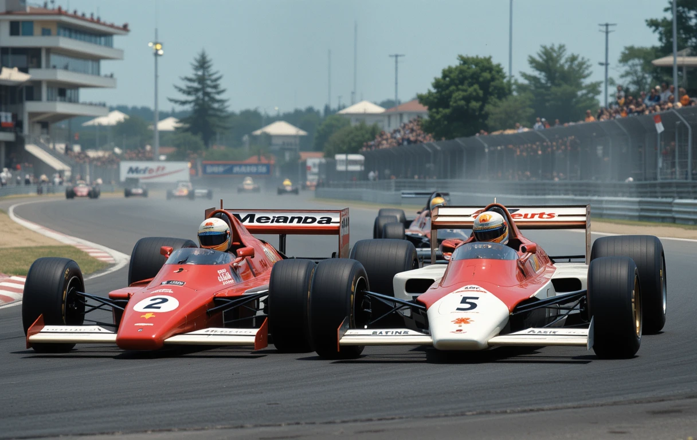

SENNA VS PROST
la rivalidad mas legendaria de la formula 1!
La rivalidad entre Ayrton Senna y Alain Prost es considerada una de las más intensas y legendarias en la historia de la Fórmula 1. Estos dos pilotos, con estilos completamente opuestos, protagonizaron algunos de los momentos más dramáticos y polémicos del deporte.
A finales de la década de 1980, Alain Prost, apodado "El Profesor", era el piloto dominante en la F1. Su estilo de conducción era calculador, estratégico y metódico. En contraste, Ayrton Senna, un joven brasileño que rápidamente se destacó, era agresivo, apasionado y arriesgado, dispuesto a llevar su auto al límite en cada curva.
En 1988, ambos pilotos coincidieron en el equipo McLaren-Honda. Aunque inicialmente mantenían una relación profesional, la lucha por el campeonato los distanció rápidamente. Senna, con un estilo más atrevido, ganó el título ese año, mientras Prost comenzaba a sentir que la balanza en el equipo favorecía al brasileño.
En 1989, la relación entre ambos pilotos se deterioró por completo. Durante el Gran Premio de Japón, Prost y Senna llegaron como los principales contendientes al título. En la penúltima vuelta, Senna intentó adelantar a Prost en la chicane final, pero el francés cerró la puerta y ambos colisionaron.
Prost abandonó la carrera, pero Senna logró reincorporarse, ganar la carrera y mantener viva su lucha por el título. Sin embargo, la FIA lo descalificó por haber recortado la chicane tras el incidente, entregando el campeonato a Prost. Esta decisión alimentó la teoría de Senna de que la FIA favorecía al piloto francés.
En 1990, Prost dejó McLaren y se unió a Ferrari. Una vez más, la lucha por el título se definió en el GP de Japón. En la primera curva de la carrera, Senna, que largaba segundo, embistió intencionalmente el auto de Prost, sacándolos a ambos de la pista. Con los dos fuera de carrera, Senna se aseguró el campeonato mundial.
Después de la carrera, Senna admitió que había provocado el choque como una forma de vengarse por la descalificación del año anterior. Este acto fue duramente criticado, pero también consolidó su imagen de piloto implacable y audaz.
En 1993, Prost, ahora en Williams, ganó su cuarto campeonato mundial y anunció su retiro. En la última carrera de la temporada, Senna, que ganó la carrera, sorprendió a todos al esperar a Prost en el podio para abrazarlo. Fue un gesto inesperado, ya que su relación había sido tensa durante años.
Sin embargo, la tragedia golpeó a la Fórmula 1 pocos meses después. En el Gran Premio de San Marino de 1994, Ayrton Senna falleció tras un accidente en la curva Tamburello. Prost, ya retirado, quedó profundamente afectado por la muerte de su antiguo rival. Más tarde, admitió que, a pesar de su enemistad, había sentido un gran respeto y admiración por Senna.
La rivalidad entre Ayrton Senna y Alain Prost fue mucho más que una lucha por campeonatos: fue un choque de personalidades y estilos que definió una era de la Fórmula 1. Aunque su relación estuvo marcada por la confrontación, al final, su mutuo respeto dejó una huella imborrable en el deporte.